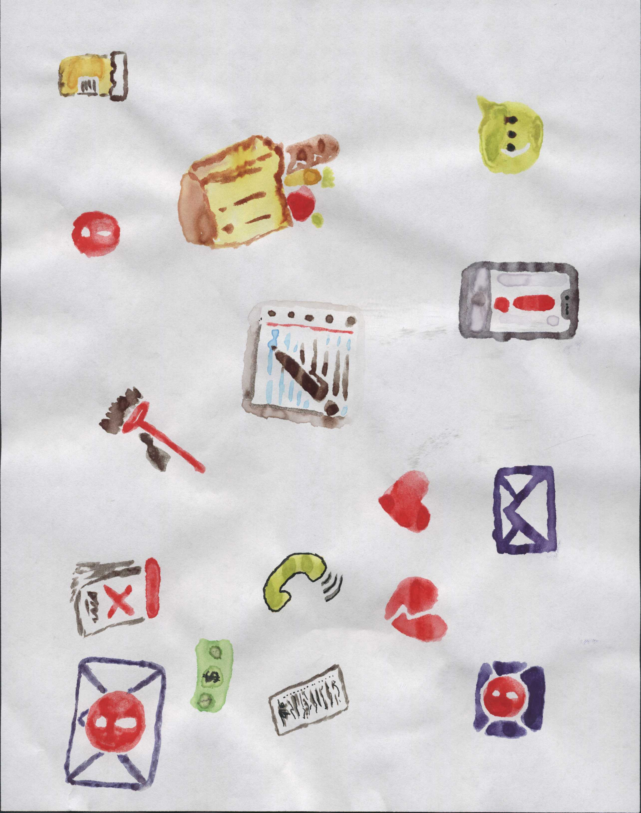
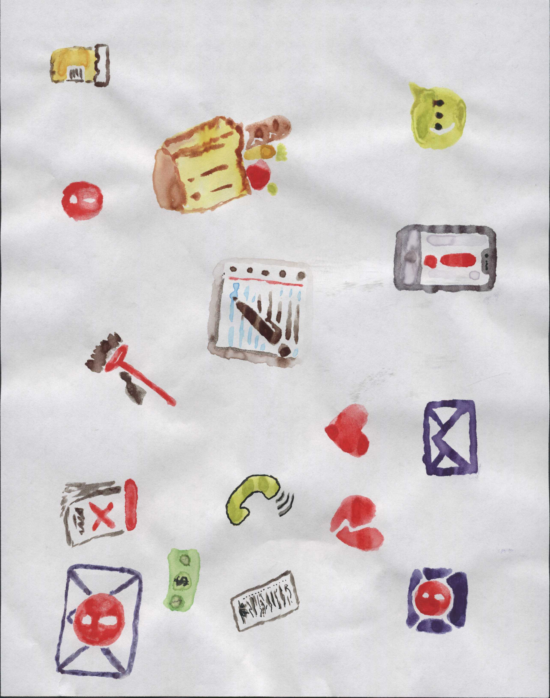

The Desert
2024 An augmented reality, geospatial data experiment. Check back for new devlogs on the progress of this project! A test of the lighting system over Mount Rainier, Washington. Distant fog changes color thorought the day based on a handpicked gradient of colors.
A test of the lighting system over Mount Rainier, Washington. Distant fog changes color thorought the day based on a handpicked gradient of colors.
Engine: Unity
Platforms: iOS, Mobile Web
Duration: In Progress
Team Size: Me
About
The Desert is a calm, meditative, mobile experience that makes your phone into a window through which one sees the world transformed into a barren sandy landscape. The Desert was first pitched as part of a game narratives course. The game is about helping people pay more attention to the experiences we have interacting with our physical environments.
Development Process
I am working on this game as a solo project. So far, I have written custom APIs to process geospatial data in Unity and handle downloading terrain data based on player location. I have also designed in engine terrain lighting and coded a system for rendering time of day according to the time of day in the real world.
Attributions
This project makes partial use of code from the Virtual Reality Geospatial Information System (ViRGIS) project to process geographical data from the United States Geological Survey (USGS).
 The game features a dynamic background which adapts to maintain a certain framerate.

Each of the sprites used in game were painted by hand.
The game features a dynamic background which adapts to maintain a certain framerate.

Each of the sprites used in game were painted by hand.